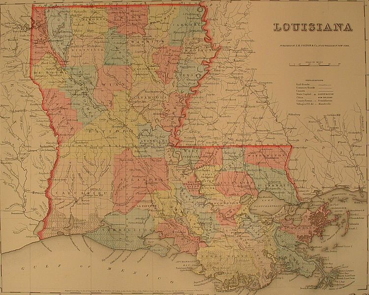

Goal 2: Learn about Louisiana archives and libraries.
Choices:
A. Learn about Louisiana archives and libraries.
- Learn about Louisiana archives and libraries in this FamilySearch Wiki article.

- Explore the Louisiana state archives.
- Explore the State Archives and Libraries site for Louisiana.
- Explore Louisiana Dept. of Archives collection.
- Explore the Books We Own site for Louisiana genealogy publications. Volunteers may be available for lookup services.
B. Learn about Louisiana city directories.
- Learn about Louisiana city directories in this FamilySearch Wiki article.
- Explore Louisiana city directories.
- Find out more about city directories in this research guide from Ancestry.
- Explore Louisiana city directories on the Ancestry site.
Goal 3: Learn about Louisiana vital records.
Choices:
A. Learn about Louisiana vital records.
- Learn about Louisiana vital records in this article.
- Explore links for vital records on the Louisiana Dept. of Health and Hospitals site.
- Search for online Louisiana vital records and find addresses for state offices to write to for records.
- Explore Louisiana birth, marriage, and death records on the AccessGenealogy site.
- Explore Louisiana birth certificate records on the Birth-Certificates.net site.
B. Explore Louisiana marriage and death records.
- Explore links for Louisiana marriage records.
- Explore the Ancestors at Rest site for Louisiana death records.
- Explore the ObituariesHelp site for Louisiana obituaries.
- Explore Louisiana death records, indexes, and obituaries.
C. Explore Louisiana census and voter records.
- Get an overview of Louisiana censuses in this article.
- Explore the MyFreeCensus site for Louisiana state and county census records.
- Explore Louisiana census records on the AccessGenealogy site.
- Learn about Louisiana voting registers in this article.
Goal 4: Learn about Louisiana church and cemetery records.
Choices:
A. Learn about Louisiana church records.
- Get an overview of Louisiana church records in this article.
B. Explore Louisiana cemetery records.
- Explore Louisiana cemetery records in this article.
- Browse the Interment.net site for Louisiana cemetery records.
- Search for Louisiana cemetery records online.
- Explore the Tombstone Transcription Project on the U.S. GenWeb site.
- Search the FindaGrave site for cemetery records.
- Search the BillionGraves site for cemetery records.
Goal 5: Learn about Louisiana emigration and immigration.
Choices:
A. Learn about Louisiana emigration and immigration.
- Learn about Louisiana emigration and immigration in this FamilySearch Wiki article.
- Learn about Louisiana migration routes in this FamilySearch Wiki article.
Goal 6: Learn about Louisiana military records.
Choices:
A. Learn about Louisiana military records.
- Learn about Louisiana military records in this FamilySearch Wiki article.
- Explore Louisiana military resources on Cyndi's List.
Goal 7: Learn about Louisiana probate, land, and court records.
Choices:
A. Learn about Louisiana probate, land and court records.
- Learn about Louisiana probate records in this FamilySearch Wiki article.
- Learn about Louisiana land and property records.
B. Learn about Louisiana court records.
- Learn about Louisiana court records in this FamilySearch Wiki article.
Goal 8: Learn about Louisiana maps and gazetteers.
Choices:
A. Learn about Louisiana maps and gazetteers.
-

- Learn about Louisiana maps in this FamilySearch Wiki article.
- Learn about Louisiana gazetteers in this FamilySearch Wiki article.
B. Explore Louisiana maps and gazetteers.
- Explore the David Rumsey collection of Louisiana maps.
- Explore the Perry-Castaneda site for maps of Louisiana.
- Explore historical Louisiana maps on the Historic Map Works site.
Goal 9: Learn about Louisiana newspapers.
Choices:
A. Learn about Louisiana newspapers.
- Learn about Louisiana newspapers in this FamilySearch Wiki article.
B. Explore Louisiana newspapers.
- Search for Louisiana historical newspapers in the Library of Congress collection.
- Search Louisiana newspapers in the onlinenewspapers.com site.
- Search Louisiana newspapers in the world-newspapers.com site.
- Search Louisiana newspapers in the ABYZ News Link site.
Goal 10: Explore additional websites for research.
Choices:
A. There are a number of websites with valuable resources for Louisiana research.
- Explore links in Cyndi's List.
- Explore links in Kindred Trails.
- Explore links in GenealogyLinks.net.
Goal 11: Search records from Louisiana.
Choices:
A. Use the QUIKLinks or County Pages (top of page) to quickly search the most common record collections for Louisiana.
Note: To search records on these sites, you must be registered or be at a FamilySearch Center.
- Click a link in the first section to search a FamilySearch collection.
- Click a link in the second section to search an Ancestry collection.
- Click a link in the third section to search a Findmypast collection.
B. Explore additional record collections.
- In each program (FamilySearch, Ancestry, or Findmypast), explore additional record collections besides the ones listed in QUIKLinks on this page.
Goal 12: Get help with your Louisiana research.
Choices:
A. Use Facebook pages to get answers to your questions.
- Visit the Louisiana Genealogy Network page on Facebook.
- Visit the Louisiana Genealogy page on Facebook.
- See the Genealogy on Facebook list of Facebook groups dedicated to helping with research for Louisiana.

B. Join a mailing list or message board for Louisiana research.
- Join the RootsChat forum and post questions about Louisiana research.
- Search the RootsWeb site for Louisiana research mailing lists.
- Explore the Louisiana research mailing lists on Cyndi's List.
- Use the RootsWeb message boards to read or post questions about Louisiana research.
C. Learn about Louisiana genealogy societies.
- Learn about genealogy societies in Louisiana in this FamilySearch Wiki article.
- Learn about genealogy societies in Louisiana in this FamilySearch Wiki article.
- Explore Louisiana genealogy society sites on Cyndi's list.
Louisiana Counties
Name = FamilySearch; A = Ancestry; L = Linkpendium